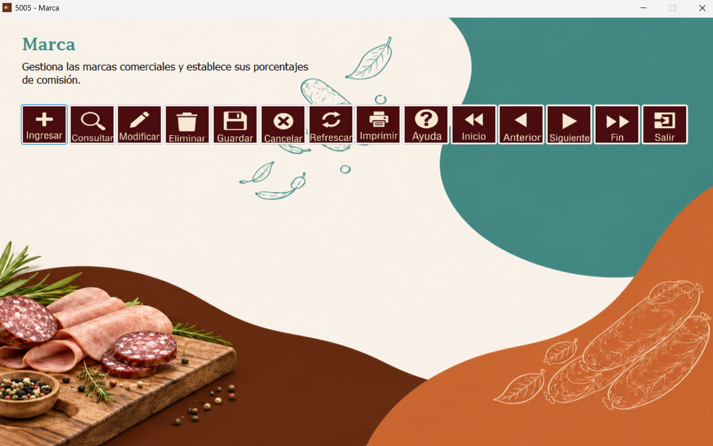

Este formulario permite gestionar las marcas comerciales y establecer sus porcentajes de comisión.

Primero, haga clic en el botón Ingresar. Se desplegarán los campos que deben completarse para registrar una marca. En la parte inferior se mostrarán los registros ya ingresados.
Ingrese los valores que desea registrar y luego haga clic en Guardar para registrar la información.
Se desplegará una ventana de confirmación. Seleccione Sí para aceptar el registro o No para cancelarlo, según corresponda.
Para buscar una marca en específico, haga clic en el botón Consultar.
En la ventana de consultas, complete los campos Campo, Operador y Valor, según la información que necesite buscar.
Haga clic en Buscar. Los registros que cumplan los filtros indicados aparecerán en la parte inferior de la ventana de consultas.
Seleccione en la tabla el registro que desea modificar, identificado por su ID, y haga clic en Modificar. Cambie los valores necesarios sin modificar el identificador del registro. Para guardar los cambios, haga clic en Guardar.
El formulario también cuenta con botones para desplazarse entre registros (Inicio, Anterior, Siguiente y Fin), además de Refrescar, Imprimir y Salir.